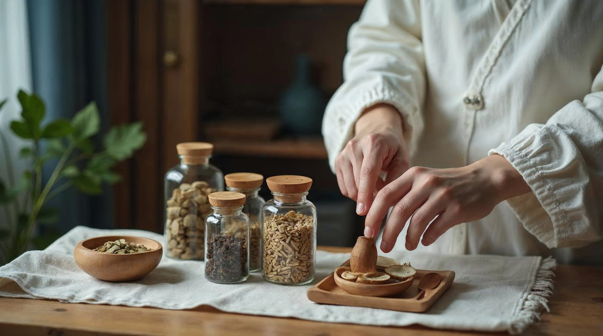
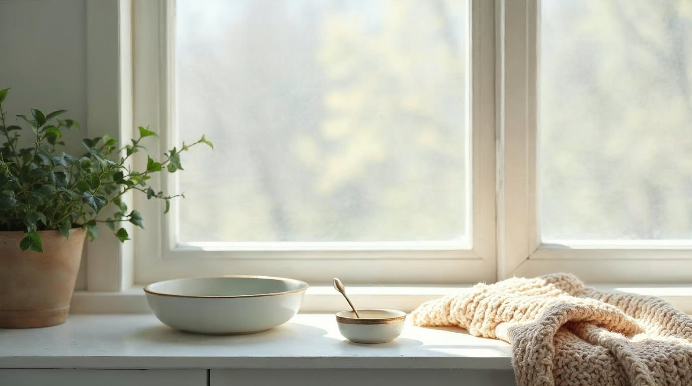
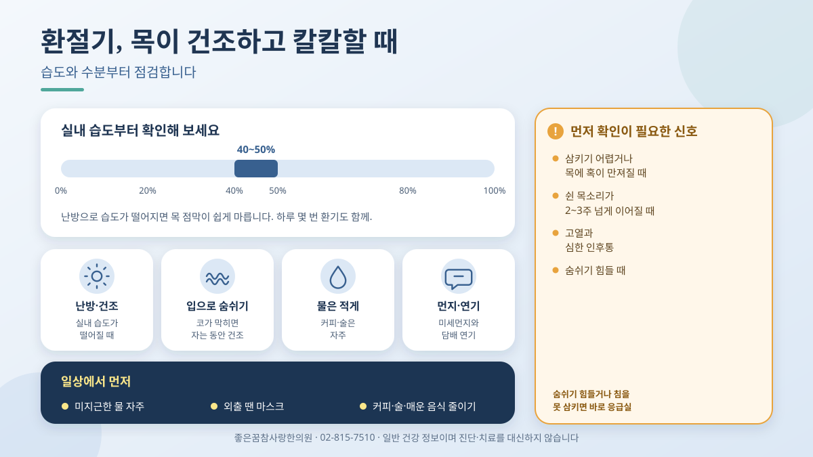

이종호 한의사 감수좋은꿈참사랑한의원 대표원장 (한의사 면허번호 19769)발행 2026-11-24 · 수정 2026-11-26
이 글의 차례
- 왜 이런 불편이 생길 수 있나요
- 왜 환절기만 되면 목부터 마를까요?
- 건조함 말고 다른 이유는 없을까요?
- 자주 하는 오해
- 예를 들면 이런 경우입니다
- 먼저 이렇게 여쭙니다
- 스스로 점검해 보세요
- 일상에서 먼저 해 볼 수 있는 것
- 자는 동안 목이 마르지 않게 하려면?
- 먹고 마시는 것은 이렇게 챙겨 보세요
- 목소리를 많이 쓰는 날에는
- 사무실과 교실에서는 이렇게 해 보세요
- 미세먼지가 많은 날 외출 뒤에는
- 어르신과 아이는 무엇을 더 살필까요?
- 눈과 피부, 입술까지 함께 마른다면
- 환절기가 오기 전에 미리 챙겨 두세요
- 한의원에서 함께 살필 수 있는 경우
- 얼마나 지켜보고, 언제 상담하면 좋을까요
- 이렇게 기록해 오시면 상담이 쉬워집니다
- 이런 증상은 먼저 확인이 필요합니다
- 함께 읽으면 좋은 글
아침에 눈을 뜨자마자 침을 삼켜 보는데, 목 안이 사포처럼 까끌까끌합니다. 물 한 컵을 마시고 나서야 겨우 목소리가 나오고, 출근길 찬 바람을 맞으면 다시 칼칼해집니다. 감기인가 싶어 몸을 살펴보지만 열도 없고 콧물도 없어, 이게 무엇인지 애매한 채로 며칠이 지나갑니다.
이런 목은 큰 병처럼 느껴지지 않아 그냥 넘기기 쉽지만, 하루 종일 신경이 쓰이고 말할 때마다 불편해 일에도 집중하기 어렵다는 분이 많습니다. 저는 이럴 때 목만 보지 않고, 목을 마르게 하는 하루의 환경과 습관을 함께 찾아봅니다.
공기가 건조해지는 환절기에는 아침에 목이 간질거리고 칼칼한 분이 많습니다. 난방으로 건조한 실내, 미세먼지, 물을 적게 마시는 습관, 코가 막혀 입으로 숨 쉬는 것이 겹치면 더 심해집니다. 습도와 수분부터 점검하고, 바꿔 봐도 오래가면 이비인후과 진료로 원인을 먼저 확인합니다.
왜 이런 불편이 생길 수 있나요
- 난방으로 실내 습도가 떨어지면 목 점막이 쉽게 마릅니다.
- 코가 막혀 입으로 숨을 쉬면 자는 동안 목이 더 건조해집니다.
- 물을 적게 마시고 커피와 술을 자주 마시면 목이 더 마를 수 있습니다.
- 미세먼지나 담배 연기가 목을 자극할 수 있습니다.
- 일교차가 커지는 시기에는 잠이 얕아지고 몸이 쉽게 지쳐 목의 불편을 더 크게 느끼기도 합니다.
왜 환절기만 되면 목부터 마를까요?
여름 내내 촉촉하던 공기는 가을로 넘어가며 습도가 빠르게 떨어집니다. 여기에 난방을 켜기 시작하면 실내 공기는 더 건조해지고, 밖은 차고 안은 따뜻한 온도 차이 속을 하루에도 몇 번씩 오가게 됩니다. 목과 코 안의 점막은 이런 변화에 가장 먼저 반응하는 곳입니다.
점막이 촉촉할 때는 먼지와 찬 공기를 걸러 주는 힘이 있지만, 마르면 작은 자극에도 간질거리고 따끔거리기 쉽습니다. 그래서 같은 사람이라도 여름에는 괜찮다가 환절기만 되면 아침마다 목이 칼칼해지는 일이 생깁니다.
한의학에서는 가을의 건조한 기운이 폐와 목, 코를 먼저 마르게 한다고 보고, 이를 조(燥)라고 부르기도 합니다. 그래서 목이 마른 분께 코와 피부, 대변이 함께 마르지 않는지도 여쭙고, 몸 전체의 촉촉함을 함께 살핍니다.
건조함 말고 다른 이유는 없을까요?
습도와 물을 챙겨도 칼칼함이 그대로라면 다른 이유를 함께 생각해 봅니다. 몇 가지 단서를 미리 적어 오시면 어디부터 살필지 정하기 쉽습니다.
- 아침에 목소리가 쉬어 있고 신물이 올라오거나 헛기침이 잦다면, 위의 내용물이 목까지 올라오는 역류 쪽을 함께 봅니다.
- 콧물이 목 뒤로 넘어가는 느낌이 있고 가래를 자주 뱉게 된다면, 코와 부비동 쪽을 먼저 살펴볼 필요가 있습니다.
- 혈압약이나 알레르기약, 일부 신경과·정신건강의학과 약처럼 입이 마르는 약을 드시고 있다면, 약 이름을 알려 주세요. 약은 임의로 끊지 마시고 처방한 의사와 상의해 주세요.
- 하루 종일 목소리를 크게 쓰는 일을 한다면, 건조함보다 목을 쓰는 양이 더 큰 원인일 수도 있습니다.
자주 하는 오해
- 목이 마르면 차가운 물을 한 번에 많이 마시면 된다고 여기기 쉽지만, 미지근한 물을 조금씩 자주 나누어 마시는 편이 목에 덜 자극적입니다.
- 가습기는 세게 오래 틀수록 좋다고 생각하기 쉽지만, 습도가 너무 높으면 곰팡이가 생기기 쉬워 40~50% 정도로 맞추는 편이 좋습니다.
- 목이 칼칼하면 모두 감기라고 여기기 쉽지만, 열이나 몸살 없이 아침에만 마른다면 실내 건조나 입호흡이 원인인 경우가 많습니다.
- 사탕이나 목캔디로 버티면 된다고 생각하기 쉽지만, 잠깐 편할 뿐 습도와 수분 습관을 함께 바꾸지 않으면 다시 마르기 쉽습니다.
예를 들면 이런 경우입니다
- 예를 들어 난방이 센 사무실에서 하루 종일 일하고 오후마다 목이 따끔한 직장인이라면, 자리 주변 습도와 물 마시는 간격, 환기 시간을 함께 정리합니다.
- 예를 들어 새벽까지 공부하며 커피를 자주 마시는 수험생이라면, 커피와 물의 양, 잠드는 시간을 함께 여쭙습니다.
- 예를 들어 아침에 일어나면 입안과 목이 바짝 말라 있는 어르신이라면, 자는 동안 입으로 숨을 쉬는지와 복용 중인 약을 함께 확인합니다.
먼저 이렇게 여쭙니다
- 목이 마르는 때가 아침인가요, 하루 종일인가요?
- 코로 숨 쉬기 어려워 입으로 숨을 쉬나요?
- 기침, 가래, 쉰 목소리, 열이 있나요?
- 실내 난방과 습도는 어떤가요?
- 요즘 잠과 피로는 어떤가요?
- 눈이나 피부, 입술도 함께 마르나요?
- 드시는 약 가운데 입이 마르는 약이 있나요?
- 신물이 올라오거나 아침에 목소리가 쉬어 있나요?
스스로 점검해 보세요
- 아침에 일어나면 목과 입안이 바짝 말라 있다
- 자는 동안 입을 벌리고 잔다는 말을 들은 적이 있다
- 하루에 마시는 물이 커피보다 적다
- 실내 난방을 오래 켜 두고 환기를 잘 하지 않는다
- 말을 많이 한 날 목이 더 잠긴다
- 환절기마다 비슷한 불편이 되풀이된다
해당하는 항목을 진료 때 말씀해 주시면 상담이 쉬워집니다. 여러 항목이 겹친다면 습도와 물, 잠자리부터 하나씩 바꿔 보세요.
일상에서 먼저 해 볼 수 있는 것
- 실내 습도 40~50% 정도 유지하고 하루 몇 번 환기하기
- 미지근한 물을 자주 나누어 마시기
- 외출할 때 마스크로 찬 공기와 먼지 막기
- 커피와 술, 매운 음식 줄이기
- 흡연하는 분은 줄이거나 끊기
- 씻은 뒤 욕실에 남은 따뜻한 수증기를 잠시 마시며 목 축이기
- 말을 오래 해야 하는 날에는 중간중간 목을 쉬는 시간을 두기
자는 동안 목이 마르지 않게 하려면?
아침에 유독 목이 마르다면 밤사이 침실 환경을 먼저 살펴보세요. 난방 온도가 높을수록 공기는 더 건조해지기 쉬워, 침실은 조금 서늘하다 싶은 정도로 두고 이불로 체온을 지키는 쪽이 목에는 편합니다.
가습기는 얼굴에 바로 닿지 않도록 침대에서 조금 떨어진 곳에 두고, 습도계로 40~50%를 맞춰 보세요. 가습기가 없다면 젖은 수건을 방에 널어 두는 것도 방법입니다. 잠들기 전 미지근한 물을 한두 모금 마시고, 머리맡에도 물을 두어 새벽에 깼을 때 목을 축일 수 있게 합니다.
코가 막혀 입을 벌리고 자는 것 같다면 그것부터 확인해야 합니다. 옆으로 누워 자면 입이 덜 벌어진다는 분도 있고, 베개 높이를 바꾸면 편하다는 분도 있어 몇 가지를 하나씩 바꿔 보며 아침 목 상태를 적어 보세요. 자기 전 방 습도와 아침 습도를 함께 적어 두면, 밤사이 공기가 얼마나 마르는지도 알 수 있습니다.
습도가 크게 떨어지는 방이라면 가습기 위치나 난방 시간을 조금씩 조정해 보세요.
먹고 마시는 것은 이렇게 챙겨 보세요
목이 마를 때는 한 번에 많이 마시기보다 한두 모금씩 자주 마시는 것이 좋습니다. 책상 위에 컵을 두고, 한 시간에 한 번쯤은 일어나 물을 채우는 습관을 들이면 자연스럽게 마시는 횟수가 늘어납니다.
커피를 여러 잔 드신다면 한 잔을 따뜻한 보리차나 미지근한 물로 바꿔 보세요. 맵고 짠 음식, 술은 목을 더 마르게 하거나 자극할 수 있어 목이 칼칼한 기간에는 조금 줄여 봅니다.
배나 무처럼 물기가 많은 음식을 반찬이나 간식으로 곁들이는 분도 많습니다. 다만 꿀이나 단 차를 자주 드시면 혈당과 치아에도 신경 쓰셔야 하니, 하루에 드시는 양을 정해 두세요.
목소리를 많이 쓰는 날에는
말을 많이 해야 하는 날은 목이 더 빨리 마릅니다. 말하는 사이사이 물을 한 모금씩 마시고, 시끄러운 곳에서 목소리를 높여 이야기하기보다 조용한 곳으로 옮기거나 가까이 다가가 말해 보세요.
목이 칼칼할 때 헛기침으로 목을 가다듬는 습관은 오히려 목을 더 자극할 수 있습니다. 헛기침 대신 침을 삼키거나 물을 한 모금 마셔 보세요. 저녁에는 말을 줄이고 목을 쉬게 하는 시간을 두는 것도 다음 날 아침 목 상태에 도움이 될 수 있습니다.
사무실과 교실에서는 이렇게 해 보세요
하루 대부분을 보내는 곳이 사무실이라면 그곳의 공기가 목 상태를 좌우하는 경우가 많습니다. 온풍기 바람이 얼굴 쪽으로 바로 오는 자리라면 바람 방향을 바꾸거나, 그게 어렵다면 목에 얇은 스카프를 둘러 바람을 막아 보세요.
책상에 작은 가습기나 물을 담은 그릇을 두는 분도 있고, 점심시간에 잠깐 바깥 공기를 쐬며 걷는 것으로 목을 쉬게 하는 분도 있습니다. 회의가 길게 이어지는 날에는 회의 전후로 물을 한 컵씩 챙겨 마셔 보세요.
미세먼지가 많은 날 외출 뒤에는
미세먼지가 많은 날 바깥에 오래 있었다면, 집에 돌아와 손을 씻고 미지근한 물로 입안을 헹궈 목에 남은 먼지를 덜어 내 보세요. 겉옷은 현관이나 베란다에서 털어 먼지를 방 안으로 들이지 않도록 합니다.
외출할 때는 얼굴에 잘 맞는 마스크를 쓰고, 미세먼지가 심한 날에는 바깥 운동을 실내 운동으로 바꾸는 것도 방법입니다. 코 세척을 해 보고 싶다면 방법과 횟수를 이비인후과나 약사와 먼저 상의해 주세요.
어르신과 아이는 무엇을 더 살필까요?
어르신은 나이가 들수록 목마름을 덜 느껴 물을 적게 드시는 경우가 많고, 드시는 약도 여러 가지라 입과 목이 마르기 쉽습니다. 식사 때와 약 드실 때만이라도 물을 한 컵씩 넉넉히 드시도록 곁에서 챙겨 주세요.
아이는 목이 마르다는 말 대신 기침을 하거나 목을 긁는 듯한 소리를 내기도 합니다. 자는 동안 입을 벌리고 자는지, 낮에 물보다 단 음료를 더 찾는지 살펴보시고, 코막힘이 오래가면 소아청소년과나 이비인후과 진료를 함께 받아 보세요.
눈과 피부, 입술까지 함께 마른다면
환절기에 목과 함께 눈이 뻑뻑하고, 손등과 정강이가 하얗게 일어나고, 입술이 자주 튼다는 분도 많습니다. 이런 경우 목만 따로 보기보다 몸 전체가 건조해진 흐름으로 보고, 물과 습도, 잠과 식사를 함께 살핍니다. 씻은 뒤 바로 보습제를 바르고, 입술에는 자극이 적은 립밤을 수시로 발라 주세요.
눈이 뻑뻑할 때는 화면을 보는 사이사이 먼 곳을 바라보며 눈을 천천히 깜빡여 주고, 증상이 오래가면 안과에서 확인해 보시길 권합니다.
환절기가 오기 전에 미리 챙겨 두세요
해마다 같은 때 목이 칼칼해진다면, 그 계절이 오기 전에 준비해 두는 것만으로도 불편을 덜 수 있습니다. 여름 동안 넣어 두었던 가습기는 꺼내서 바로 쓰기보다 물때와 곰팡이가 없는지 먼저 깨끗이 씻고 말려 둡니다.
습도계를 침실과 거실에 하나씩 두면 난방을 켜기 시작하는 날부터 습도가 얼마나 떨어지는지 눈으로 확인할 수 있습니다. 숫자로 보이면 가습기를 언제 켜고 환기를 언제 할지 정하기도 훨씬 쉬워집니다. 작년에 목이 마르기 시작한 때를 달력에 적어 두었다면, 그 무렵부터 물병을 챙기고 잠자리 습도를 미리 맞춰 보세요.

한의원에서 함께 살필 수 있는 경우
- 환절기마다 목이 칼칼하고 건조한 경우 호흡과 생활 환경을 함께 살핍니다.
- 기침이나 가래가 오래 이어지는 경우 호흡기 상태와 잠을 함께 살핍니다.
- 목소리를 많이 써서 목이 자주 잠기는 경우 목 주변의 긴장과 쉬는 방법을 함께 살핍니다.
좋은꿈참사랑한의원에서는 목이 마르는 시간과 생활 환경을 먼저 듣고 몸 상태를 함께 살핍니다. 그 뒤 실내 환경과 수분 습관을 정리하는 계획과 침·한약 상담 등을 상태에 맞춰 정합니다.
첫 방문에는 목이 언제, 어디서 가장 마르는지와 기침·열 같은 동반 증상을 먼저 충분히 여쭙니다. 그다음 진맥을 짚고 혀를 본 뒤, 적어 오신 습도와 물·커피 기록을 함께 보며 잠과 소화, 몸의 온기까지 하루 리듬을 정리합니다. 마지막으로 앞으로 어떤 방향으로 살필지와 집에서 바꿔 볼 점을 설명해 드립니다.
얼마나 지켜보고, 언제 상담하면 좋을까요
- 습도와 물 마시는 습관을 바꾸고 1주 정도 지켜보며 목이 마르는 시간대를 적어 보세요.
- 습관을 바꿨는데도 2주가 넘도록 칼칼함이 이어진다면 이비인후과 진료를 받아 보시길 권합니다.
- 기침과 가래가 2주 넘게 함께 이어진다면 이비인후과나 내과 진료로 원인을 확인해 보세요.

이렇게 기록해 오시면 상담이 쉬워집니다
- 목이 가장 마르는 시간대와 장소
- 실내 습도(습도계가 있다면)
- 하루 물과 커피 마시는 양
- 잠든 시간과 자다 깬 횟수
- 복용 중인 약
이런 증상은 먼저 확인이 필요합니다
- 삼키기 어렵거나 목에 혹이 만져지는 경우
- 고열과 함께 목이 심하게 아픈 경우
이런 신호가 있으면 한의원보다 가까운 병원이나 응급실을 먼저 찾으세요.
함께 읽으면 좋은 글
- 겨울 사무실 공기가 답답하고 목이 따끔할 때는 환기를 어떻게 하나요?
- 자다가 입안이 말라 새벽에 깰 때는 무엇을 살피나요?
- 혀 앞쪽에 붉은 점이 많아지면 목 상태를 함께 보나요?

여쭙는 것
- 목이 마르는 때가 아침인가요, 하루 종일인가요?
- 코로 숨 쉬기 어려워 입으로 숨을 쉬나요?
- 기침, 가래, 쉰 목소리, 열이 있나요?
생활에서 해 볼 것
- 실내 습도 40~50% 정도 유지하고 하루 몇 번 환기하기
- 미지근한 물을 자주 나누어 마시기
- 외출할 때 마스크로 찬 공기와 먼지 막기
한의원에서 함께 살필 것
- 환절기마다 목이 칼칼하고 건조한 경우 호흡과 생활 환경을 함께 살핍니다.
- 기침이나 가래가 오래 이어지는 경우 호흡기 상태와 잠을 함께 살핍니다.
- 목소리를 많이 써서 목이 자주 잠기는 경우 목 주변의 긴장과 쉬는 방법을 함께 살핍…
먼저 확인이 필요한 신호
- 삼키기 어렵거나 목에 혹이 만져지는 경우
- 고열과 함께 목이 심하게 아픈 경우
한눈에 보는 표
| 구분 | 핵심 |
|---|---|
| 여쭙는 것 | 목이 마르는 때가 아침인가요, 하루 종일인가요? 코로 숨 쉬기 어려워 입으로 숨을 쉬나요? |
| 생활에서 해 볼 것 | 실내 습도 40~50% 정도 유지하고 하루 몇 번 환기하기 미지근한 물을 자주 나누어 마시기 |
| 한의원에서 함께 살필 것 | 환절기마다 목이 칼칼하고 건조한 경우 호흡과 생활 환경을 함께 살핍니다. 기침이나 가래가 오래 이어지는 경우 호흡기 상태와 잠을 함께 살핍니다. |
| 먼저 확인이 필요한 신호 | 삼키기 어렵거나 목에 혹이 만져지는 경우 고열과 함께 목이 심하게 아픈 경우 |
자주 묻는 질문
목이 마르는 이유는 무엇인가요?
건조한 공기, 입호흡, 수분 부족, 알레르기 등 여러 원인이 있어 생활을 함께 점검합니다.
가습기를 틀면 되나요?
습도를 40~50% 정도로 맞추고, 가습기는 매일 물을 갈고 자주 씻어 깨끗하게 쓰는 것이 중요합니다.
한의원에서는 어떻게 살피나요?
목의 증상과 잠, 소화, 몸의 온기를 함께 묻고 생활 전체의 리듬 속에서 살핍니다.
자는 동안 입이 벌어지는 것은 어떻게 하나요?
코막힘이 있는지 먼저 확인하는 것이 좋습니다. 코가 오래 막혀 있다면 이비인후과 진료를 함께 받으시고, 잠자리 습도와 베개 높이도 점검해 보세요.
따뜻한 차를 마시면 도움이 되나요?
미지근한 물이나 카페인이 적은 차를 조금씩 자주 드시는 것은 목을 촉촉하게 두는 데 도움이 될 수 있습니다. 너무 뜨거운 음료는 오히려 목을 자극할 수 있습니다.
진료 시간은 어떻게 되나요?
평일은 09:30~20:00(점심 13:00~14:00), 토·일·공휴일은 09:30~15:00에 진료합니다. 방문 전 전화(02-815-7510)로 확인해 주세요.
좋은꿈참사랑한의원은 재진 때 지난번 이야기부터 이어서 여쭙니다. 진료시간과 예약은 오시는 길에서 확인하세요.
어디서 상담받을 수 있나요?
좋은꿈참사랑한의원은 서울 동작구 만양로2길 2 신성빌딩 3층·5층(서울 동작구 상도동, 7호선 상도역 3번 출구 근처)에 있습니다. 한의사 3명(이종호 대표원장, 조영기 수석진료원장, 정원영 진료원장)이 진료합니다. 진료시간은 평일 09:30~20:00(점심 13:00~14:00), 토·일·공휴일 09:30~15:00이며, 방문 전 전화로 확인을 권합니다. 예약은 네이버 예약, 카카오톡 상담, 전화 02-815-7510로 받습니다.
이 글은 일반적인 건강 정보이며 개인의 진단이나 치료를 대신하지 않습니다. 증상이 있거나 복용 중인 약이 있다면 진료를 통해 확인하세요. 치료 효과는 개인마다 다를 수 있습니다.
작성 기준: 일반적으로 알려져 있는 건강 정보를 참고해 정리했습니다(대표원장 감수). 증상 기록은 1~2주 동안 하루 1회, 비슷한 시간에 적어 오시면 지난 상태와 비교하기 쉽습니다.